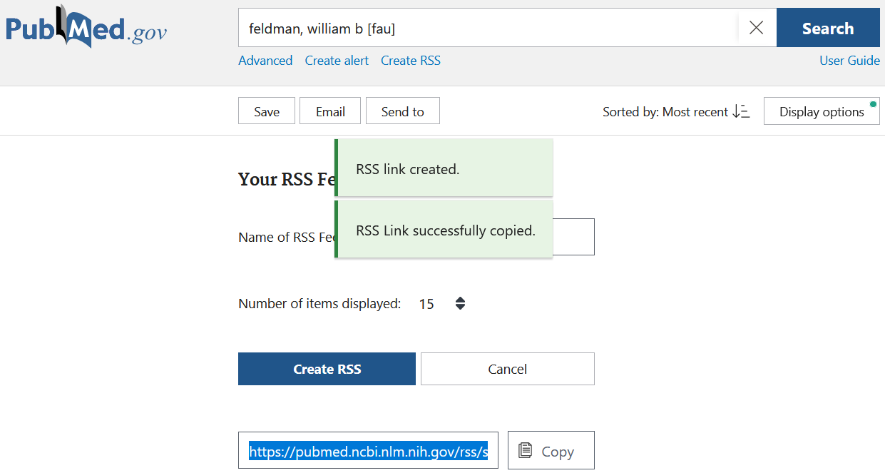

Section 6 A Brief Guide to the Scientific Literature
A few notes on the scientific literature:
- In our lab, like in any lab, we’re trying to advance scientific understanding, adding to what is already known. So, we have to keep track of the scientific literature and what actually is known, to help us think about important next questions that haven’t been asked and to place our findings in appropriate context.
- There is a lot of literature–arguably too much. You can’t read it all, and unfortunately just reading as much as you can is not as helpful as one might hope. Among other things, as one highly influential paper has argued (I think persuasively), most published research findings are false. (Ioannidis, 2005; see more on this in Section 8, Reliability and Open Science)
- So, we need to read widely, but also be critical of what we read.
- If you’re reading an older paper, are there more recent follow-up papers (either by the original paper’s authors or other scholars) in which the key finding is replicated and then built upon? My favorite example (and the basis of my own first experimental paper) is Greene JD, et al, “An fMRI investigation of emotional engagement in moral judgment.” It turns out that Greene’s title and interpretation are wrong (he found that a particular type of moral reasoning activates the default-mode network, which isn’t particularly connected to emotional engagement), but the association of DMN activation with this type of moral reasoning has been very widely replicated in all sorts of follow-up studies.
- If you’re reading a newer paper, one thing that many scientists don’t understand well is prior probability (see Ioannidis)–that is, even before doing some experiment, how likely is that study’s hypothesis to be true given what we previously knew about the topic? For instance, do we have reliable evidence regarding related “in the neighborhood” hypotheses or constructs? Is there a plausible mechanism linking the predictor and outcome that coheres with other things we know about the system under study? Can we be confident that the predictor and outcome can be measured reliably, or should we expect lots of random (noise) variation in measurements? (If the latter, then measurable effects will be small and large samples are needed.) Are the reasonably expected effect sizes large in relationship to the expected measurement error (e.g., brain structural differences between patients with dementia and controls) or very small or particularly subtle (e.g., interaction effects among two unvalidated measures in a study of individual differences within a relatively homogenous sample of healthy subjects)? Even if a paper shows that A is related to B with a very small p value, if that finding isn’t connected to any prior knowledge we have about A and B, or if there isn’t some plausible mechanism linking A and B, or if A and/or B are assessed using measures that are noisy compared to the effect size but the samples are small, the finding is probably false.
- Here are some other rough and imprecise factors to consider when evaluating a study: First, while preregistration isn’t a guarantee (and some papers reporting preregistered studies don’t actually follow the protocol described in the preregistration), it does protect against some major sources of false positives and is a positive indicator that the authors are concerned about reliability. Same goes for authors who share their data, which is increasingly expected by good journals. Finally, impact factors and other measures of journals’ reputations are flawed, but can be helpful to think about, particularly if you’re not yet confident in your own assessment of scientific quality and reliability. Very high impact factors do not by themselves indicate reliability (and papers in the “highest impact” journals may actually be less likely to replicate…), but very low impact factor journals may be “predatory journals” or in other ways unconcerned with scientific best practices.
6.1 Getting started on a topic
Many scientists would disagree with me, but if you’re completely new to a topic area in science, I wouldn’t recommend that you start by picking up a bunch of experimental papers in that area to read. After all, most research findings are false (see above), and you’re not going to be well-positioned to sort out which are which. I think it’s better to start by trying to get a conceptual framework for the topic–this might turn out to be wrong, but at least is a way of fitting empirical findings together, and can then guide your intuition about whether a reported empirical finding actually fits with whatever else is known (or believed) in that domain. So, I would recommend starting with at least two or three high-quality review articles on a topic, preferably from within the last 5-7 years and from different authors/groups. Two journal series that I like for review articles are Nature Reviews (e.g., Nature Reviews Neuroscience, Nature Reviews Neurology) and Annual Review (e.g., Annual Review of Neuroscience, Annual Review of Psychology), and you can also find helpful reviews in other high/medium-impact journals in a given discipline.
Here are some options for searching for a review article in PubMed:

For our search filters here we’ve set “Article types” to “Review,” we’ve restricted our search to the last 5 years (you can play with this), and we’re sorting by “Best Match.” This has yielded hits in Nature Reviews Neuroscience and the Annual Review of Clinical Psychology (a little further down), among others. Keep playing around with your search terms and filters, and do some scanning of these papers, to find the reviews most relevant to your interests.
Of course, when you start reading, you’ll find that these reviews are subject to different forms of bias. Review paper authors are often influential figures in the field, and tend to cite their own findings–in part because many readers will be particularly interested in a prominent scientist’s interpretation of their own influential work (more than of someone else’s work), and also because people usually study and write about what they think is important, so will tend to think things that they have studied and written about are important. So this is something to be aware of, and also a reason to look for reviews by different authors/groups.
6.2 Reading in more depth
Next steps for reading depend a bit on your purposes, but often begin with identifying a key paper, author or group/lab of interest. For instance, in reading reviews you might see repeated references to a highly influential paper, or you might be working on a task in our lab that we’ve adapted from another group. Then you may want to read other things that these authors have written about the topic or task, and use the references in those articles to find other papers of interest.
If you have a key paper that you’d like to use as a basis for further searching, PubMed and Google Scholar both have options for finding “Similar articles” and “Cited by” articles (that is, articles that have cited your key paper as a reference).
Another resource that’s helpful, particularly when you’re further along (or are actually drafting a paper), is JANE (Journal/Author Name Estimator), also discussed in Section 7, Choosing a journal. Here you can enter an abstract (either from a target paper or for a manuscript you might be drafting) and find journals, authors and articles that match as related to this entry.
6.3 Using RSS feeds to follow the scientific literature
This is the method I’ve been trying to use since 2021, will see if I can stick to it. Here I’m borrowing from the Fraser lab–see there for more details about what RSS is. Basically, every time a journal updates its content, it will also update the RSS feed. So this way, you don’t have to keep randomly checking websites for updates, you’ll know automatically when there’s something new for you to read.
First, go to feedly.com and create a Feedly account. Feedly is an RSS aggregator–it puts all your RSS feeds in one place, and has handy iOS and Android apps that you can use to check your feeds on the go.
Next, add feeds for your journals of interest to Feedly. If you click the “+” (plus) symbol in Feedly for “Follow New Sources,” you can search for journal titles in the search bar, or you can go to the journal website, track down the RSS link location and copy it to the bar.
Finally, you can add custom PubMed searches.
I have set up PubMed RSS feeds to follow key scientists, friends and
collaborators so I can know when they publish new papers. Go to pubmed.gov
(IMPORTANT: for this, don’t use pubmed.ucsf.edu) and search for an author
using their full first name and last name (plus middle initial, if they have a
common last name and use their middle initial reliably), followed by [fau]
(for full name author search). After searching, click on “Create RSS” which will
drop down and show some options for your feed (not too important to worry about
for our purposes). Click “Create RSS” and a URL will be created for your feed.
Click “Copy” and then paste the feed URL address into the Follow New Sources bar
in Feedly.

If you want you can do even more complicated searches and can use other
field codes, e.g. [tiab] for title/abstract, or [jo] for
journal name. For example, if you just search for “framing effects” as a topic
you’ll get lots of articles on health promotion strategies that aren’t directly
relevant to us. So instead, I have a saved search for
"framing effect" AND (psychology OR neuroscience OR neuroimaging) that excludes a lot of articles not of interest. I have another saved search for articles about decision-making in patients with dementia or MCI:
(dementia OR alzheimer* OR aging OR "mild cognitive impairment") AND ("decision
neuroscience"[tiab] OR neuroeconomics OR ((neuroscience[tiab] OR
neuroanatom*[tiab] OR neuroim*[tiab]) AND ("decision making"[tiab] OR
"decision-making"[tiab] OR financial[tiab])))